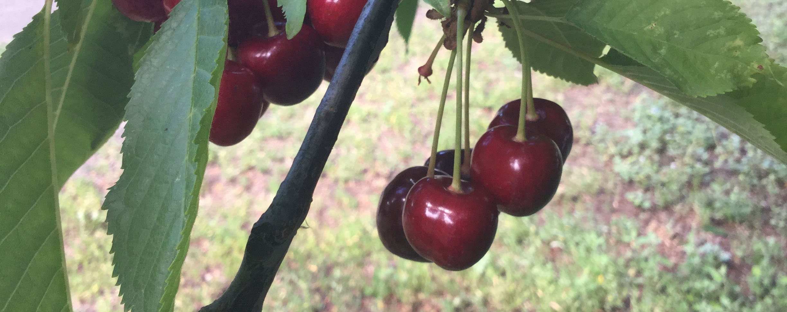
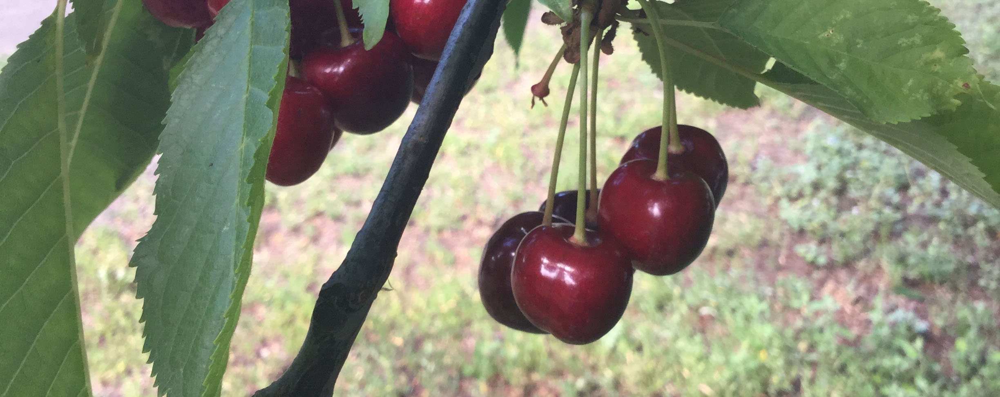

Culture in Tri-County Washington
What I've lumped under culture are activities that really showcase some of the ideals and people of this area. In Ferry County this is highlighted in mining and the Earth with Stone Rose Quarry and the Republic Gold Mine. In Stevens County St. Pauls Mission is a historic site while Meyers Falls Market exemplifies some of todays culture. Finally in Pend Orielle county the Boundary Dam is a opportunity to see how the people have shaped the land and Bear Creek Mercantile is a opportunity to see how the land has shaped the people.
Ferry County
Stone Rose Quarry
Stonerose Quarry located in Republic WA gives you the opportunity to dig through 50 million year old rock and find fossils. This is a kid friendly activity and is lots of fun. After you find the fossils the staff will help you identify what you've found and then you get to keep three fossils. There is an admissions fee and unless you have your own hand tools its another five dollars to rent gear.
Republic Gold Mine
Republic the county seat of Ferry County WA was built as a gold town and so exploring the town can be a great look at the history and culture of gold mining. Coming into the town are monuments showing how much gold has been mined out of the area and the mining culture is saturated into the town. Their towns festival in Late June is even titled Prospecters days. The mine closed a few years ago but Republic is still a great town to explore.
Stevens County
Meyers Falls Market
Meyers Falls Market located in Kettle Falls WA can be a great place to visit. The local culture of today is evident. Local artists will sell their goods and local companies will sell products such as handcrafted goat cheese. This is also a great place to get some fresh made ice cream or a cup of coffee from the local roasters shop. The shop itself has been put together from an old warehouse which is reminiscent of the orchard culture of the early 20th century.
St.Pauls Mission
St. Pauls Mission located off of Highway 20 is a goldmine of history. Driving into the area the first thing you will notice is a museum that contains information about the natives who once frequented this area. This is a great opportunity to learn some history about the Columbia River before it became Lake Roosevelt. At the end of the road there is the old portage route that was used for thousands of years to get around the now submerged Columbia Falls. The most eye catching feature however, is St. Pauls Mission an old timberframed mission church. The door isn't locked and you can go inside and look around. Beside the building is a trail that is no more than a half of a mile but shows a lot of history in just this short walk including a board detailing where Fort Colville used to be. The most memorable part of the walk is near the end of the loop where there is an overlook of where Columbia Falls once was and one of the natives sharpening stone.
Pend Orielle County
Boundary Dam
Boundary Dam is a large part of Pend Orielle County. Built by Seattle City Light it has shaped a large part the landscape. The Boundary Dam creates the entire reservoir behind it and the history of the dam itself is fascinating. You can tour the dam and during the tour have the opportunity to look out over the dam and see the vastly different terrain. There is also a nearby overlook where you can view the dam from above. This is a great way to spend an afternoon and afterwards you can explore more of the area. There are other dams along the Pend Orielle but this is the most impressive.
Bear Creek Mercantile
Bear Creek Mercantile located along the Newport Highway is similar although smaller than Meyers Falls Market. It is an artists Co-Op where local artists sell their crafts, including paintings, pottery, and photography. These artists will also offer classes. There are fourteen local artists who make up this Co-OP. Although fairly small it is worth a stop especially as it is all local. They also offer refreshments and a coffee bar.
Orchards
It wouldn't be fair to discuss the culture of this area without mentioning orchards. This area used to be one of the largest apple producing areas in the Country. After the dam was built much of that has disappeared. However, there are still several organic orchards in the area that are great places to get fresh fruit. This season begins in Mid-July with cherrries and ends in late November with the last of the apples. Some of the orchards even allow you to self-harvest. The fruit at these orchards is almost always less expensive than at the grocery store and the experience of seeing an orchard is a worthwhile one. My personal favorite is Riverview Orchard although the owners are stepping back and so it may not be around in the future.